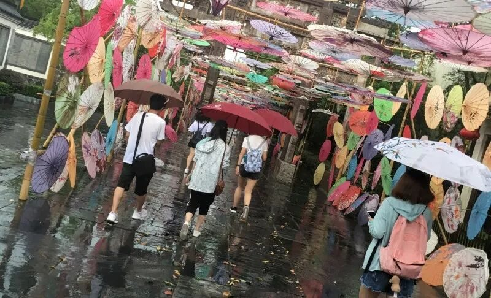
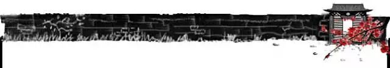
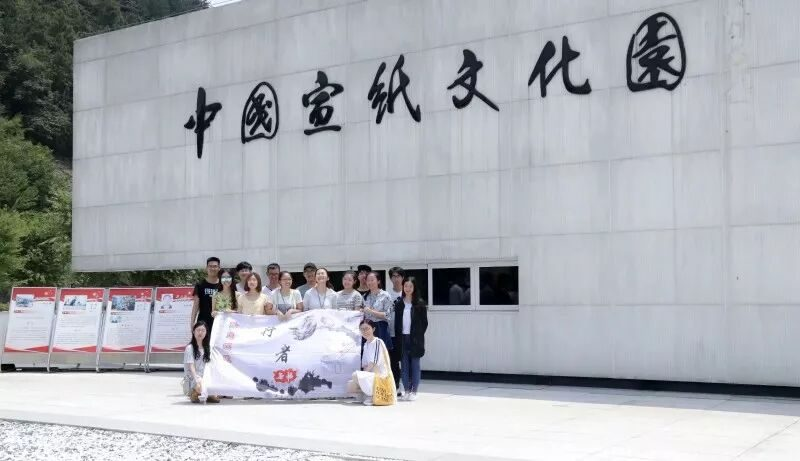
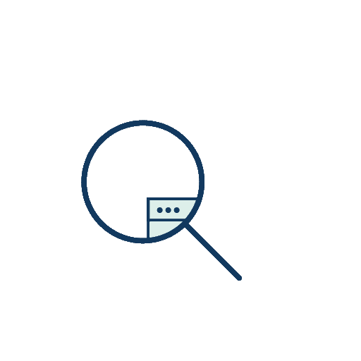
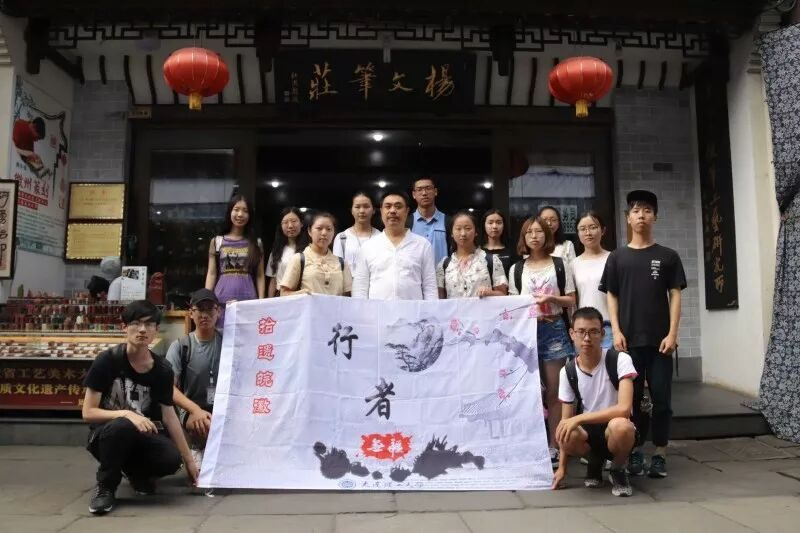
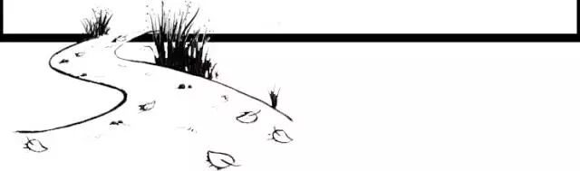

【素笺寄情·二】传文化之美，承行者之路


素
笺
寄
情
文化是一个很大的东西，它贯穿古今，见证了兴衰，领略了一代代才人的芳华。它在书画中，在建筑中，在声音中，也在每个人的心目中。传承文化，不仅仅需要主体，也需要更多来自社会的关注和帮助，需要注入更多的年轻活力。行者无疆是一支年轻的团队，它有能力和目标，努力把有限的力量转化为无限的未来。更重要的是它有情，将15个来自各地的人聚在一起，让热爱文化的人不再形单影只，让更多的人唤起对文化的热忱。
记得第一次和后勤组调研组开会，安徽文化这个词太大让我们难以找到突破口。非遗作为一种珍贵的文化，我们容易到各种馆去寻找它的存在，但却难找到对它更深一步的了解。我们从城市出发，到零零散散的县城，村庄。在终于找到类似乌溪，泾县，歙县这些地方后，我们对于具体去什么地方仍毫无头绪。网站，书籍，各种推送成了我们的信息源。大家从B12讨论到彩虹长廊，陪伴我们的除了昏暗的灯光，还有每一个充满激情的策划员。那晚我由衷地感激能加入行者无疆，因为我明白这就是我想要的团队，这就是我想要的合作伙伴。

到了安徽，长途乘车和持续的高温让大家都略显疲惫，拖着沉重的行李箱，梦想也启程了。到今天来说，我想把这个梦想定义为“让更多人记住皖徽文化，让更多人有文化认同感”。梦想的道路自然是充满了荆棘。极端的天气变化，路线的难以确定性，经费的燃烧，让很多计划中的事情发生了改变。多少次犹豫，多少次疲惫不堪，还好我们没有放弃，因为行者酱们有“情”。对于我个人而言，若是没了这份情，调研将会变成旅游，甚至连旅游都称不上，只能说“去过这个地方”。没有了这份情，我就鲜有机会读到那些充满了文化气息的文字，看到拍的这么好的合照以及作为一个团队所该有的凝聚力。每晚回去后，大家都各忙各的，特别是队长和文宣组任务最重，有些感谢来不及当面说，只能在这里说一声“你们真的辛苦了！”

到了今天，行者无疆之拾遗皖徽已过去了6天，在这6天里，我也想了许多。这一路上的经历，所邂逅的珍贵文化，所碰到的形形色色的人。对于我这一代的人来说，我觉得更多的是属于“文化疏远”，我们都知道非物质遗产文化面临着各种危机和冲突，商业化，科技化。在没有深入作文化调研前，我一直认为商业化科技化在蚕食着传统文化，却没有认真想过为什么会这样。就像这次采访的很多同龄人中，他们的回答往往都是“商业化太严重，开发过度”。可是现在有人问起我的时候，我会回答：“商业化是当今已避开不了的问题，时代在发展，文化也需要发展。适当的商业化能让文化平稳发展，让技艺的生命力更强，同时能让传承人有更多的信心坚持下去。科学的经营理念应该说是让文化传承和现代接轨的最有效方法，因为科技是时代发展的方向指标，文化的发展固然不应该脱离最初的方向，但也不能与时代过度脱节，否则将面临逐渐被颠覆的可能。”我们的长辈，是许多文化的坚守者，但他们由于精力有限，宣传和保护文化往往事倍功半，而我们的晚辈，生活基本上被学习和各种设备充满，很少再去接触文化的东西。因此，宣传文化，保护文化的主要任务落在了我们的肩上，而行者无疆做到了。从第一期到第四期，我们让更多的人对文化有了意识，有了认同感，这是让我们每一个成员最为感动和最为骄傲的事情！

感谢遇见行者无疆的每一个人！如果可能的话，我愿意继续留在行者无疆，继续和更多的人一起传文化之美，承行者之路！

图片丨沈华 盛暘
文字丨沈柏宇
责编丨邓子孚
审核丨潘雯雯 应雨珊
行者无疆实践团
QQ：2758025831

随行者一起认识世界
长按二维码关注